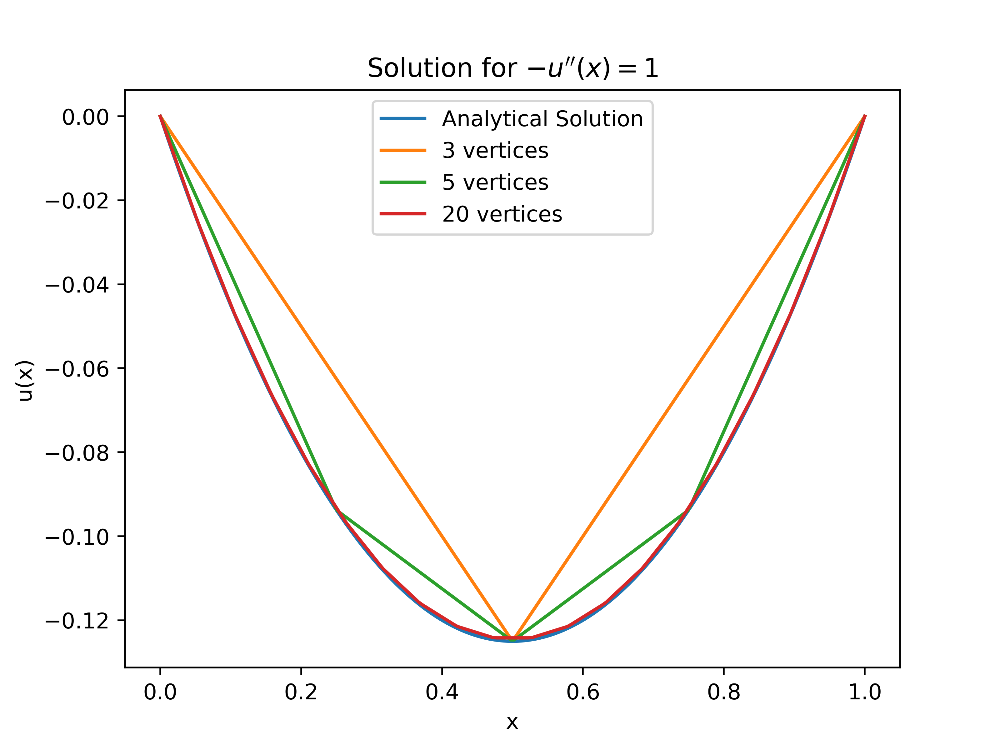
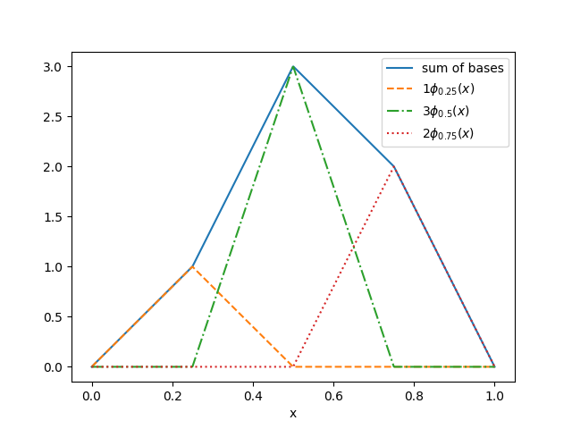
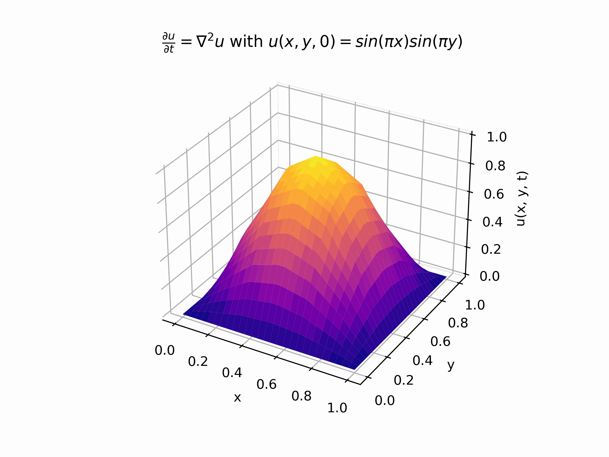
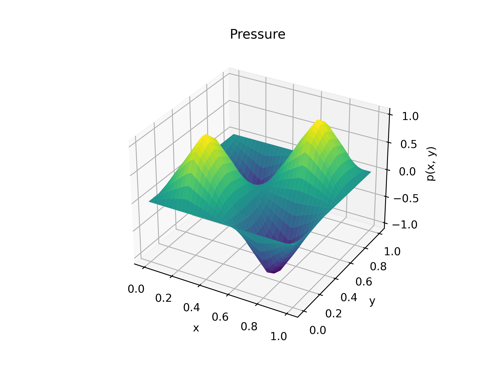
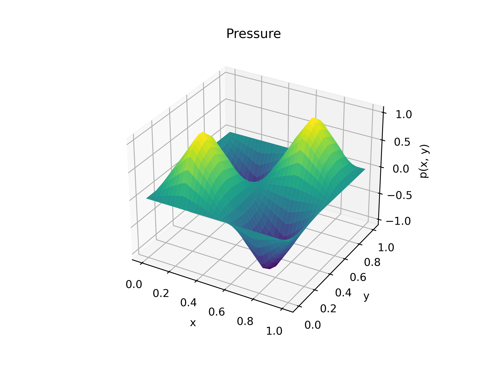

Finite Element Analysis
This project work consisted of a self motivated investigation into methods of solving various partial differential equations, in which the original goal was to create a sufficiently advanced python script to model some fluid flow directly from the Navier Stokes Equation. The actual work I have managed to complete was creating finite element scripts from scratch (well, using only basis libraries such as numpy) some of which solve the heat equation and stokes flow. I plan to come back to this project at some stage to create a script which solves some significant form of the Navier Stokes Equation, since I got very close to it, but time will tell if i actually do. Besides that, this was an excellent opportunity which I was given by Jonivar Skullerud, who was in charge of these projects as part of my course, who basically gave me the chance to "do my own thing" during the semester, which I am very grateful for. On Github.
Below is a report, written up mostly by Adriana, which showcases in significant detail some of the work I managed to produdce.
I cant entirely figure out why but sometimes the pdf doesn't load nicely or at all so here is a link to dowload it. here
If you couldn't be bothered to flick through the report (very understandable) I have picked out some what I think are some cool pictures from the report for which I will give a brief description.
The images below feature in the solving of the 1 dimensional poisson problem $$ -\frac{d^2u}{dx^2} = 1$$ They include solutions with varying accuracy and a visualisation of basis functions used to construct our solution.
 
The following image shows a gif for a function which is a solution to the heat equation in 2 dimensions with specified initial conditions.

And these final images show a solution to stokes flow in 2 dimensions (fluid flow in a very viscous medium) which is described by the following equations. $$\mu\nabla^2\vec{u} - \nabla p = \vec{f} $$ $$ \nabla\cdot\vec{u} = 0$$


 
